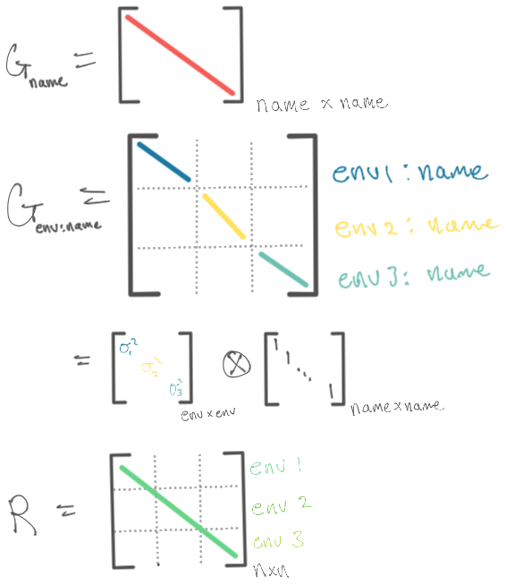
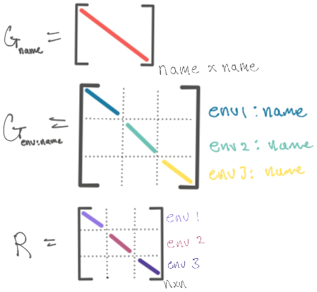
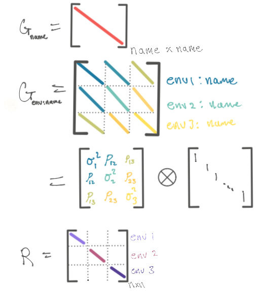

library(lattice)library(lme4)library(nlme)library(glmmTMB) # template model builder, designed as improved glmmADMBlibrary(sommer) # asREML replacementlibrary(afex) # easy anovalibrary(emmeans)library(broom.mixed) # clean mixed model outputslibrary(kableExtra) # for tableslibrary(tidyverse)
This document is still a work in progress!
20 Introduction
Using random effects into the modeling equation gives us an opportunity to account for correlations among observations in a structured manner. Having a lot of flexibility in modeling a covariance structure is generally a pretty computationally difficult problem, but modern software have made this problem rather manageable. There are many numerical methods of solving the same equations, and thus a wide array of software to consider. Given the numerical complexity of the problem, the software will often times give different estimates and standard errors.
The example that we use throughout this section is a multi-environment potato RCBD (DT_example from the sommer package). The covariates in the dataset are:
Name - the genotype of potato plant
Env - location/year combination.
Block - coded uniquely across the environments
Yield - a response, the number of potatoes from the plant
Weight - another response, weight of the potatoes, to illustrate multiple trait experiments
2 AI = Average Information, AD = Automatic Differentiation, NR = Newton Rapheson, EMMA = Efficient Mixed Model Association, EM = Expectation-Maximization, MOM = Method of Moments;
The ratings are rather subjective, based on stability, ease of use, flexibility and target applications. Personally, the order in which I would use the software (and what I recommend to others) would be: * emmREML - implements the mixed model association, mentioned above.
nlme
SAS (proc MIXED)
glmmTMB
sommer
nlme will offer many options of variance structure with similar performance if you need more flexibility, but does not deal with crossed random effects. SAS has a very intuitive interface for specifying the “G”-side and “R”-side and will likely be able to handle your use case. glmmTMB also has a very intuitive syntax, mostly following lme4 syntax, but currently the “R”-side modeling is kind of hackish and a workaround (sets the residual error to something very small). sommer I think is the newest package, and thus the components of design are still settling. It is by far the most flexible for variance structure designs, and targeted specifically to those working in multi-environment trails but I think the syntax does take some getting used to.
sommer - takes an AS-REML approach to fitting the variance components.
glmmTMB (R Package) (Paper) - is primarily a glmm package that uses lme4 based formula syntax. It uses the r package TMB in the background, which is MLE based and uses Laplace approximations for integrating out random effects.
SAS (Docs) (paper) - uses a sweep method on the REML and ML profiled likelihood. There’s good discussion of the methods in their documentation.
afex - reformulates the formula statement and uses lme4 in the background
MCMCglmm - takes a bayesian simulation approach to mixed modeling
INLA - Integrated Nested Laplacian Approximation
22.1 nlme
nlme is a rather stable package with a lot of facilities to account for many different variance structures on both the “G”-side and the “R”-side.
See ?pdClasses and ?varClasses for functional variance modeling.
22.2 sommer
You can probably think of sommer as the free version of AS-REML. It particularly specializes in multienvironment, and heterogenous variance structures.
The variance component specification is a little cryptic, but based mostly on hadamard matrix multiplication.
mmer
vsr = “Variance Structure for Random effects”, use this to build the variance, outer function
dsr = diagonal covariance structure
usr = unstructure covraince structure
mmec - the main “average information” algorithm for solving
vsc = “variance structure for coefficients”, random=~vsc(e, f, h, g) means var(g) = G.e @ G.f @ G.h @ I.g
isc = identity covariance structure
The numbering in the matrix means it’s a constraint
not to be estimated
estimated and constrained to be positive (i.e. variance component)
estimated and unconstrained (i.e., normally a covariance)
not estimated but fixed (provided by Gti arg)
Code
x <-as.factor(c(1:5,2:6,1:5))usr(x) # list(vector, vcov structure)
# lmer approachmmod1 <-lmer(Yield ~ Env + (1| Name) + (1|Env:Name), data = DT_example)# mmod1_alt <- lmer(Yield ~ Env + (1 | Name/Env), data = DT_example) # same way of specifying model identical results# summary(mmod1_alt)as.data.frame(VarCorr(mmod1))$vcov
[1] 5.173234 3.681927 4.366211
Code
# Groups Name Std.Dev.# Env:Name (Intercept) 2.2745 # Name (Intercept) 1.9188 # Residual 2.0895# profiling for standard errorspr_mmod1 <-profile(mmod1)# xyplot (pr_mmod1 , aspect =1.3)# splom(pr_mmod1)# densityplot(pr_mmod1)# taking the half the width of a .68 confidence interval as an estimate of a standard error of the estimateconfint(pr_mmod1, c(".sig01", ".sig02", ".sigma"), level = .68)^2%>%# square for varianceas.data.frame() %>%mutate(var_se_ish = (`84 %`-`16 %`) /2)
# Univariate, homogenous variance models,# for p > nans1r <-mmer(Yield ~ Env,random =~ Name + Env:Name,rcov =~ units, # residual structuredata = DT_example, verbose =FALSE)
Version out of date. Please update sommer to the newest version using:
install.packages('sommer') in a new session
Use the 'dateWarning' argument to disable the warning message.
# MME-based Average information, for records > coefficients?ans1c <-mmec(Yield~Env,random=~ Name + Env:Name,rcov=~ units,data=DT_example, verbose =FALSE)
Version out of date. Please update sommer to the newest version using:
install.packages('sommer') in a new session
Use the 'dateWarning' argument to disable the warning message.
The results with lmer are quite close, but the effect from average information is quite different. The conclusion should be that even for simple models, the numerical differences of the variances can be quite different depending on the optimization algorithm.
23.2 Heterogeneous G, homogenous R
This is an example of heterogenous VC effects for G2, and still identity for R.

23.2.1 lme4
You can force lmer to fit several random effects by expanding the variable to be a dummy variable
Linear mixed model fit by REML. t-tests use Satterthwaite's method [
lmerModLmerTest]
Formula:
Yield ~ Env + (1 | Name) + (0 + EnvCA.2011 + EnvCA.2012 + EnvCA.2013 ||
Name)
Data: DT_lmer
REML criterion at convergence: 932.2
Scaled residuals:
Min 1Q Median 3Q Max
-2.6628 -0.4984 -0.0448 0.4083 4.4902
Random effects:
Groups Name Variance Std.Dev.
Name (Intercept) 2.964 1.722
Name.1 EnvCA.2011 10.426 3.229
Name.2 EnvCA.2012 2.659 1.631
Name.3 EnvCA.2013 5.702 2.388
Residual 4.398 2.097
Number of obs: 185, groups: Name, 41
Fixed effects:
Estimate Std. Error df t value Pr(>|t|)
(Intercept) 16.5109 0.8269 23.0600 19.966 4.73e-16 ***
EnvCA.2012 -5.8089 0.8593 22.5089 -6.760 7.60e-07 ***
EnvCA.2013 -6.4233 0.9359 30.3461 -6.863 1.21e-07 ***
---
Signif. codes: 0 '***' 0.001 '**' 0.01 '*' 0.05 '.' 0.1 ' ' 1
Correlation of Fixed Effects:
(Intr) ECA.2012
EnvCA.2012 -0.860
EnvCA.2013 -0.799 0.767
23.2.2 sommer
Code
ans2r <-mmer(Yield~Env,random=~Name +vsr(dsr(Env),Name), # the second one is an interaction term, and specifiesrcov=~units,data=DT_example, verbose =FALSE)
Version out of date. Please update sommer to the newest version using:
install.packages('sommer') in a new session
Use the 'dateWarning' argument to disable the warning message.
Version out of date. Please update sommer to the newest version using:
install.packages('sommer') in a new session
Use the 'dateWarning' argument to disable the warning message.
Linear mixed model fit by REML. t-tests use Satterthwaite's method [
lmerModLmerTest]
Formula: Yield ~ Env + (1 | Name) + (0 + re2.EnvCA.2011 + re2.EnvCA.2012 +
re2.EnvCA.2013 || Name)
Data: data
REML criterion at convergence: 932.2
Scaled residuals:
Min 1Q Median 3Q Max
-2.6628 -0.4984 -0.0448 0.4083 4.4902
Random effects:
Groups Name Variance Std.Dev.
Name (Intercept) 2.964 1.722
Name.1 re2.EnvCA.2011 10.426 3.229
Name.2 re2.EnvCA.2012 2.659 1.631
Name.3 re2.EnvCA.2013 5.702 2.388
Residual 4.398 2.097
Number of obs: 185, groups: Name, 41
Fixed effects:
Estimate Std. Error df t value Pr(>|t|)
(Intercept) 16.5109 0.8269 23.0600 19.966 4.73e-16 ***
EnvCA.2012 -5.8089 0.8593 22.5089 -6.760 7.60e-07 ***
EnvCA.2013 -6.4233 0.9359 30.3461 -6.863 1.21e-07 ***
---
Signif. codes: 0 '***' 0.001 '**' 0.01 '*' 0.05 '.' 0.1 ' ' 1
Correlation of Fixed Effects:
(Intr) ECA.2012
EnvCA.2012 -0.860
EnvCA.2013 -0.799 0.767
23.2.6 SAS
Code
# SAS
proc mixed data=dt;
class env name;
model yield = env;
random name / G;
random name*env / group = env;
run;
23.3 Heterogenous G and R
Also called a Heterogeneous CS model.

23.3.1 sommer
Code
ans3r <-mmer(Yield~Env,random=~Name +vsr(dsr(Env),Name), # the second one is an interaction term, and specifiesrcov=~vsr(dsr(Env),units),data=DT_example, verbose =FALSE)
Version out of date. Please update sommer to the newest version using:
install.packages('sommer') in a new session
Use the 'dateWarning' argument to disable the warning message.
# Apparently order of your data matters, and can result in an error message of not fitting... can't find documentation as to why.DT <- DT_example[with(DT_example, order(Env)), ]ans3e <-mmec(Yield~Env,random =~Name +vsc(dsc(Env), isc(Name)),rcov =~vsc(dsc(Env), isc(units)),data = DT, # DT_example here will result in failure...verbose =FALSE)
Version out of date. Please update sommer to the newest version using:
install.packages('sommer') in a new session
Use the 'dateWarning' argument to disable the warning message.
sigma_hat <-summary(lmod3)$sigma # for some reason, defaults to CA.2012 for the "reference" sigmasigma_weights <-coef(lmod3$modelStruct$varStruct, unconstrained=FALSE) # extract the weights estimated for each Envc(CA.2012 = sigma_hat, sigma_hat*sigma_weights)^2# Multiply reference sigma to weights for final sd estimates (square for variance)
# glmmTMB workaround for heterogenous R, need to code individual units as factorDT_TMB_example <- DT_example %>%mutate(units =as.factor(1:n()))# gives "false convergence warning": https://cran.r-project.org/web/packages/glmmTMB/vignettes/troubleshooting.html# tough to diagnosetmod3 <-glmmTMB(Yield ~ Env + (1|Name) +diag(Env +0| Name) +diag(Env +0| units), dispformula =~0,REML =TRUE,data = DT_TMB_example)# update the optimizer methodtmod3_bfgs <-update(tmod3, control =glmmTMBControl(optimizer = optim,optArgs =list(method="BFGS")))# extract variance componentstmod3_bfgs %>%tidy(effects ="ran_pars") %>%filter(startsWith(term, "sd")) %>%separate(term, into =c("term", "partition"), sep ="__") %>%mutate(var_est = estimate^2) %>% dplyr::select(group, partition, var_est)
# A tibble: 7 × 3
group partition var_est
<chr> <chr> <dbl>
1 Name (Intercept) 2.96
2 Name.1 EnvCA.2011 10.1
3 Name.1 EnvCA.2012 1.88
4 Name.1 EnvCA.2013 6.63
5 units EnvCA.2011 4.94
6 units EnvCA.2012 5.72
7 units EnvCA.2013 2.56
23.3.4 SAS
Code
proc mixed data=dt;
class env name;
model yield = env;
random name;
random name*env / group = env;
repeated / group = env;
run;
SAS output for above code
Cov
Parm
Group
Estimate
name
3.0647
env*name
env
“CA.2011
10.0346
env*name
env
“CA.2012
1.8875
env*name
env
“CA.2013
6.5388
Residual
env
“CA.2011
4.9424
Residual
env
“CA.2012
5.7143
Residual
env
“CA.2013
2.5599
23.4 Unstructured G, Heterogenous R

23.4.1 sommer
Code
ans4r <-mmer(Yield~Env,random=~vsr(usr(Env), Name), # we drop name from the model just for illustration (too many variables)rcov=~vsr(dsr(Env),units),data=DT_example, verbose =FALSE)
Version out of date. Please update sommer to the newest version using:
install.packages('sommer') in a new session
Use the 'dateWarning' argument to disable the warning message.
# Display the Variance components as a matrixG_vec <-summary(ans4r)$varcomp %>%slice(1:6) %>%pull(VarComp)G <-Matrix(0,nrow =3,ncol =3)G[upper.tri(G, diag =TRUE)] <- G_veccolnames(G) <-c("CA.2011", "CA.2012", "CA.2013")rownames(G) <-c("CA.2011", "CA.2012", "CA.2013")G
3 x 3 Matrix of class "dtrMatrix"
CA.2011 CA.2012 CA.2013
CA.2011 15.6650010 6.1101600 6.3844808
CA.2012 . 4.5296090 0.3929997
CA.2013 . . 8.5972750
23.4.2 nlme
Code
# lme version. Note we dropped "Name" from the model here because otherwise the std error of the variance estimates were HUGE. checked with interval(lmod4)lmod4 <-lme(Yield ~ Env,random =list(Name =pdSymm(form =~Env-1)), # Name:Envweights =varIdent(form =~1| Env),method ="REML",data = DT_example)getVarCov(lmod4) # G, now that we specify the same likelihood, the answers are the same
# manual way of extracting the weights and multiplying by sigma for the residual variance components.# lmod4$modelStruct$varStruct # The variance structure of the residuals is in this objectvw <-1/varWeights(lmod4$modelStruct$varStruct) # accessor function gives weights, which is inverse of sigma multiplier(vw[!duplicated(vw)] * lmod4$sigma)^2# deduplicate, then multiply by sigma for variance
23.4.3 glmmTMB
Code
## glmmTMBtmod4 <-glmmTMB(Yield ~ Env +us(Env +0| Name) +diag(Env +0| units), # drop name for estimability...dispformula =~0,REML =TRUE,data=DT_TMB_example)summary(tmod4)
Version out of date. Please update sommer to the newest version using:
install.packages('sommer') in a new session
Use the 'dateWarning' argument to disable the warning message.
Right now these resources are relatively unorganized, but contain a wealth of information. It seems like the variance modeling is scattered throughout the packages in R.
Factor Specific Variances - gives example of “G” side and “R” side for heterogeneous variance modeling. There is a correct way and incorrect way to specify this. Both are heterogeneous variance component style matrices.
Covariance Structures in R - messier overview of “G” and “R” side matrix structuring, however breaks down the examples quite well in terms of how to actually specify the model that we’d like.